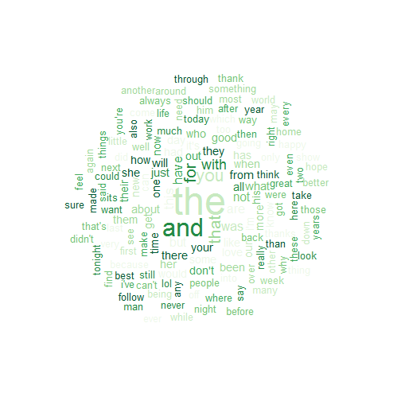

- Project overview
- The Data
- Models
- Shiny
Joris Van den Bossche
Data Scientist @ Infofarm, Belgium
Goal of the project:
The projects supository can be found here on github. I especially focused on:
A very large corpus of blog posts, news articles and tweets was provided. Only 5% of the available data was used to make the final models.
## File Lines Words Characters Longest Line: Words Longest Line: Characters
## 1 en_US.blogs.txt 899288 37334131 208361438 6630 40835
## 2 en_US.news.txt 77259 2643969 15683765 1031 5760
## 3 en_US.twitter.txt 2360148 30373543 162384825 47 213
\begin{center} The top words:  \end{center}
Say a person types "I want " into their phone. This first model will simply count all the occurences of "I want " in the data and returns the words that came after those two words, the most frequent ones on top.
If the model fails to find enough words, it will continue with finding "want " and what comes after that. If it fails to find anything there, which is possible for very uncommon words, it will give the most freqent words.
This method is called the 3-grams backoff model. An example of the output typing "I love ":
## value source
## 1: you n3gramsTable
## 2: the n3gramsTable
## 3: it n3gramsTable
This model, based on a technique first described by Kneser & Ney, is a bit more tricky. Instead of only using the freqencies of the 3 words, it will also look back at the 2 and one freqencies of the word.
That way, it takes into account that, for example, the word "Francisco" only comes after the word "San". So, when dealing with word freqencies, "Francisco" will have a very low probability while it will be high after word "San".
The algorithms that describe the can be found here. More info about the models performances can be found here. An example of outputting the words "Going to San "
## value prob source
## 1: francisco 0.4703674 3gramsProb
## 2: diego 0.4164739 3gramsProb
## 3: antonio 0.1142890 3gramsProb
The full shiny app can be found here.